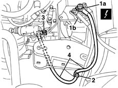

5530B22 battery earth lead - r+r
- Path
- Procedures > 55 ELECTRICAL EQUIPMENT > 5530 CURRENT GENERATOR > 5530B battery and leads > 5530B22 battery earth lead - r+r
- Kind
- repair procedure (removal / refitting; the operation number is the code)
- Applies to
- all engines; all production periods
- Interactive page
- https://sloeber94.github.io/elrnDB-lYpsln/en/#/2429399
Applies to: all engines; all production periods
 Removing
Removing
 Refitting
Refitting5530B52 Battery DRIP TRAY/SUPPORT - R.R.
Open the bonnet lid.
1. Disconnect the electrical connection (1a) from the negative battery terminal (1b).
 | Name | Connector |
|---|---|---|
1a | Battery |
2. Disconnect the electrical connection from the bodyshell.
| Name | Connector |
|---|---|---|
2 | Battery earth on bodyshell |
3. Disconnect the electrical connection from the gearbox casing.
| Name | Connector |
|---|---|---|
3 | Battery earth on engine |
4. Keep the battery earth lead.

Applies to: all engines; all production periods
Refitting
RemovingCheck that the lead is not damaged and test the electrical continuity.
Position the connection on the gearbox and secure it using the nut.
 | Fastening | Component | Ø | Value (daNm) |
|---|---|---|---|---|
- | Nut | BATTERY EARTH LEAD | M8 |
Position the connection on the bodyshell and secure it using the nut.
| Fastening | Component | Ø | Value (daNm) |
|---|---|---|---|---|
- | Nut | BATTERY EARTH LEAD | M8 |
Connect the connection to the battery.
Test the electrical system.